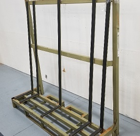

QPoint
Robotic Solutions
Waiting for supervisory app updates...
Prepare for Operation ▼
Robots ▼
Grippers & Tools ▼
Material Handling ▼

Conveyor
Overhang Shift

Rack
2% Full
Vision & Safety ▼
Favorites ▼